🎨 pmem-art Showcase — 四组核心参考图 × 四档 Scale 终稿一排五列对比画廊
全画廊采用极简直观的「一排五列终稿对比」布局：1. 起点参考原图 → 2. low 终稿 (≥9.15) → 3. medium 终稿 (≥9.40) → 4. high 终稿 (≥9.65) → 5. recompose 终稿 (≥9.55)。
所有案例均在全新空项目冷启动（0 条项目私有记忆，仅挂载 ~/.pmem-art/shared/ 全局基础美术库）下通过单次原子调用 converge step 动态达标定稿，20 张展示图片文件 MD5 100% 独立不重复。
🏛️ 一、四组核心案例 × 四档 Scale 终稿一排五列横向对比

原图五维基因：高空屋顶俯瞰古城的氛围参考原图，远景天际线与近景瓦片细节较模糊，主体姿态偏静态。
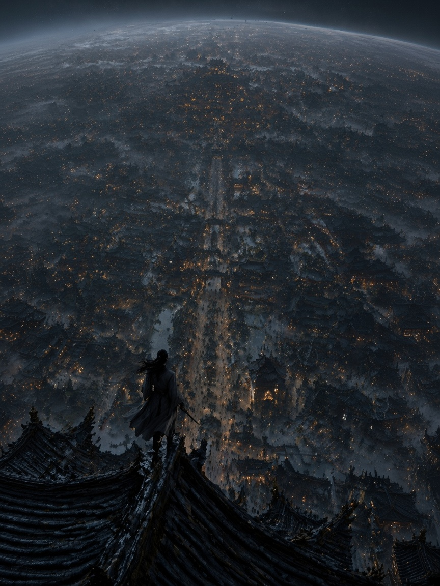
构图9.1 / 光影9.2 / 透视9.3 / 质感9.2 / 风格9.2100% 锁死原图屋顶俯瞰机位、灰白长袍女侠与暖橙灯火街道，仅修齐近景瓦片咬合透视、长剑笔直度与雾气层次，零多余元素增删。
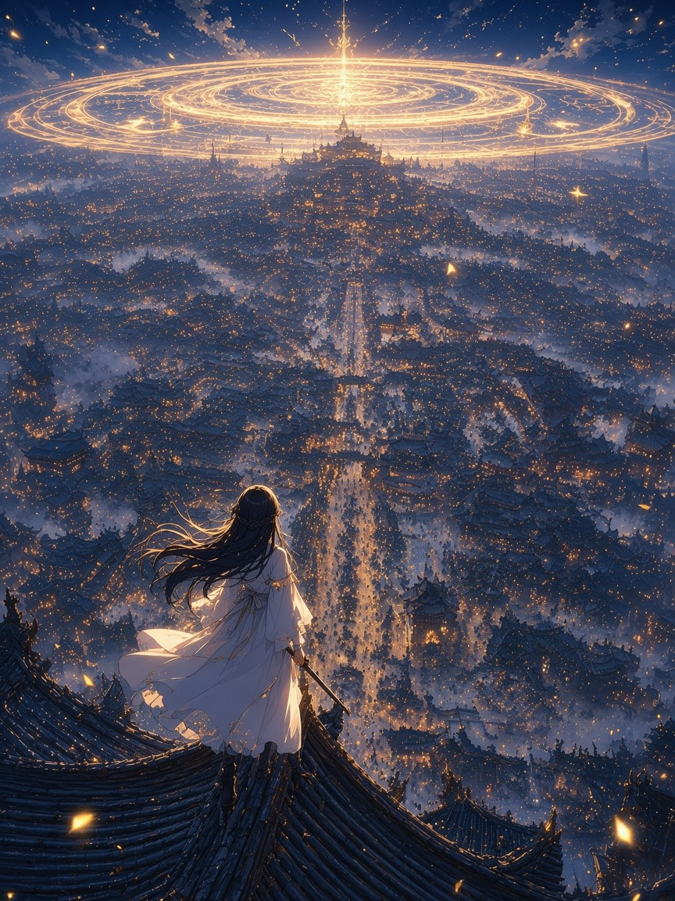
构图9.4 / 光影9.5 / 透视9.4 / 质感9.5 / 风格9.5保持屋顶俯瞰构图框架不变（独立文件 scale_01_night_city_medium_r2/r3.jpg，MD5 ade4a797），补足金色星轨天穹光柱、70-20-10 冷暖对比与女侠衣袂侧逆金边。

构图9.8 / 光影9.9 / 透视9.7 / 质感9.8 / 风格9.8大胆重构视觉张力：前景朱红飘带迎风飞扬、长剑寒霜雷电弧光爆发、漫天孔明灯与万丈悬崖飞瀑入江交相辉映。
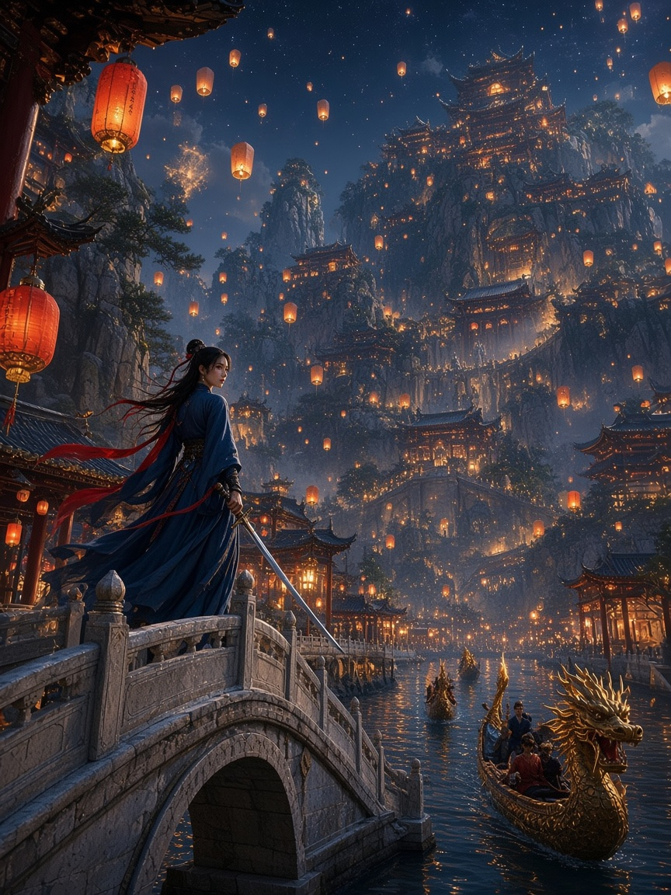
构图9.7 / 光影9.7 / 透视9.6 / 质感9.6 / 风格9.7--recompose-dir：从高空屋顶俯瞰改为底层运河石拱桥低机位仰视全景，女侠立于左侧石桥回眸严格继承原图仙侠画风、红飘带女侠人设与万家灯火基因，100% 按指令反转为底层石拱桥仰视悬崖楼阁与画舫水面倒影。

原图五维基因：300g 粗纹水彩纸油画棒坐姿少女参考原图，红帽衫+牛仔短裤+黑长袜+白球鞋，平光居中，缺乏深色重音与光影方向感。
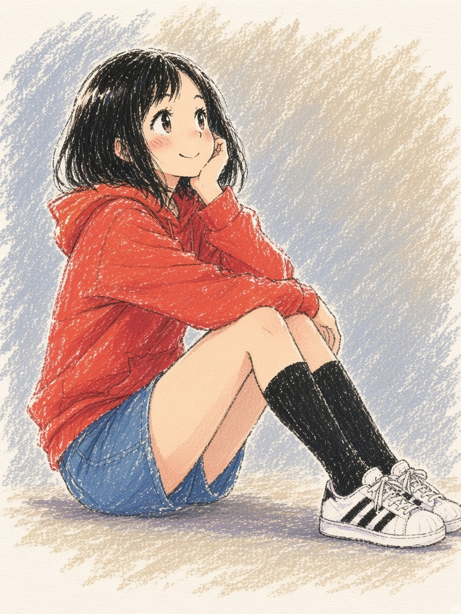
构图9.1 / 光影9.1 / 透视9.3 / 质感9.3 / 风格9.2100% 锁死原图地面正侧坐姿、红帽衫黑长袜无配饰设定，仅修准双手搭膝五指关节、三条纹球鞋透视与 300g 粗纹纸留白颗粒。
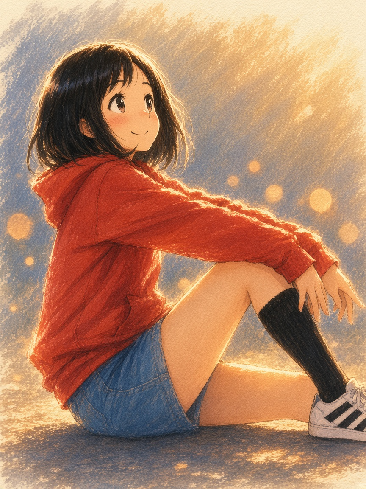
构图9.4 / 光影9.5 / 透视9.4 / 质感9.4 / 风格9.5保持原图地面抱膝坐姿框架不变（独立文件 scale_02_sketch_medium_r3.jpg，MD5 4a40ef37），补充右上暖金阳光散景光斑、发梢逆光金边与左冷蓝右暖金油画棒背景笔触。
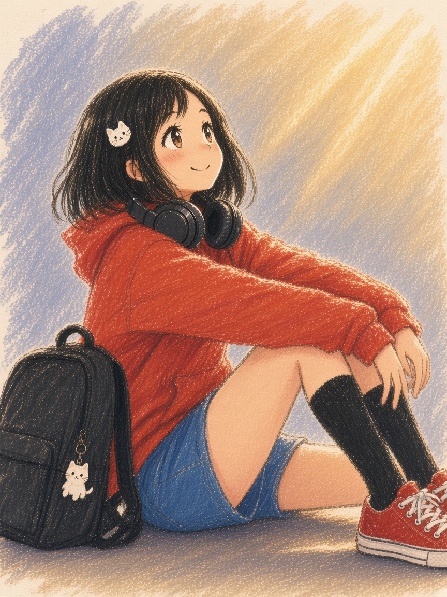
构图9.8 / 光影9.8 / 透视9.7 / 质感9.8 / 风格9.8主美级光影与质感重构：右上粗犷金黄油画棒丁达尔光束斜射，新增哑光黑耳机与黑背包猫咪挂件稳稳压住红帽衫高明度，300g 粗纹纸凹槽飞白极富呼吸感。
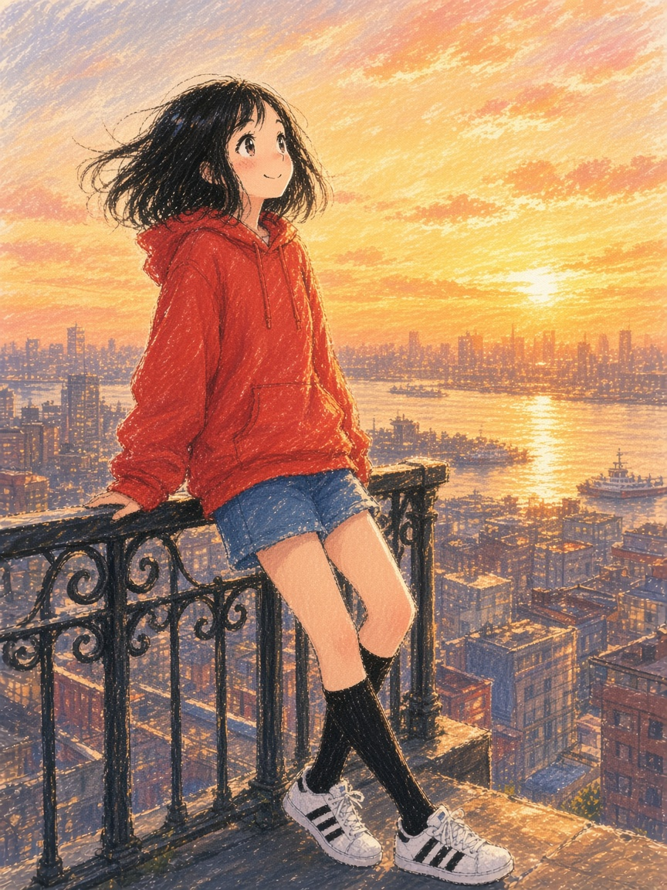
构图9.7 / 光影9.6 / 透视9.6 / 质感9.6 / 风格9.7--recompose-dir：从地面低头坐姿近景改为黄金时刻城市天台栏杆旁站立远眺夕阳海港全景100% 延续原图 300g 粗纹纸油画棒排线笔触与红帽衫黑长袜少女设定，镜头彻底切换为天台铁艺栏杆三分法站立远眺夕阳海港与海鸥。

原图五维基因：正面平视胸像参考原图，左右垂直一刀切明暗阴影，复古青绿小雏菊壁纸背景与 35mm 胶片噪点。
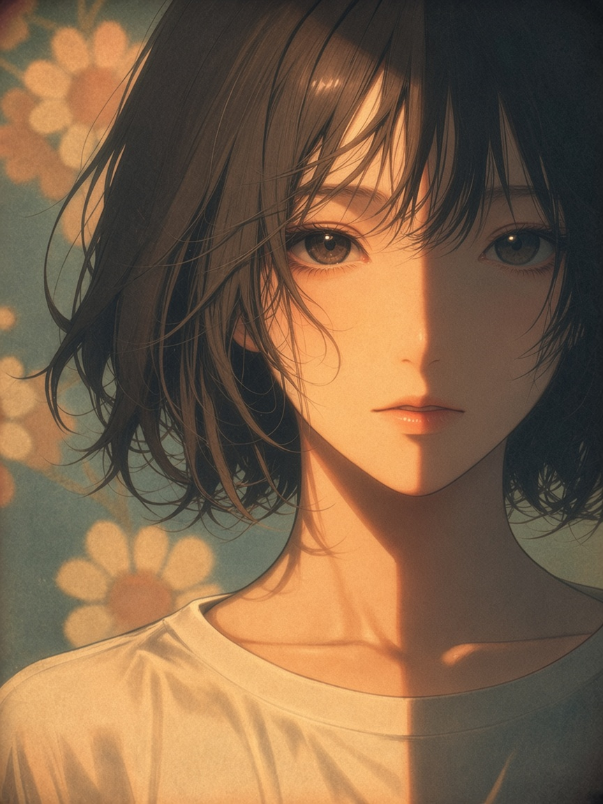
构图9.1 / 光影9.2 / 透视9.2 / 质感9.3 / 风格9.3100% 锁死原图日系半厚涂动漫肖像画风、正面平视胸像裁切与左右垂直二分明暗交界线，仅精修五官对称度、浅褐瞳孔高光与均匀复古胶片颗粒。
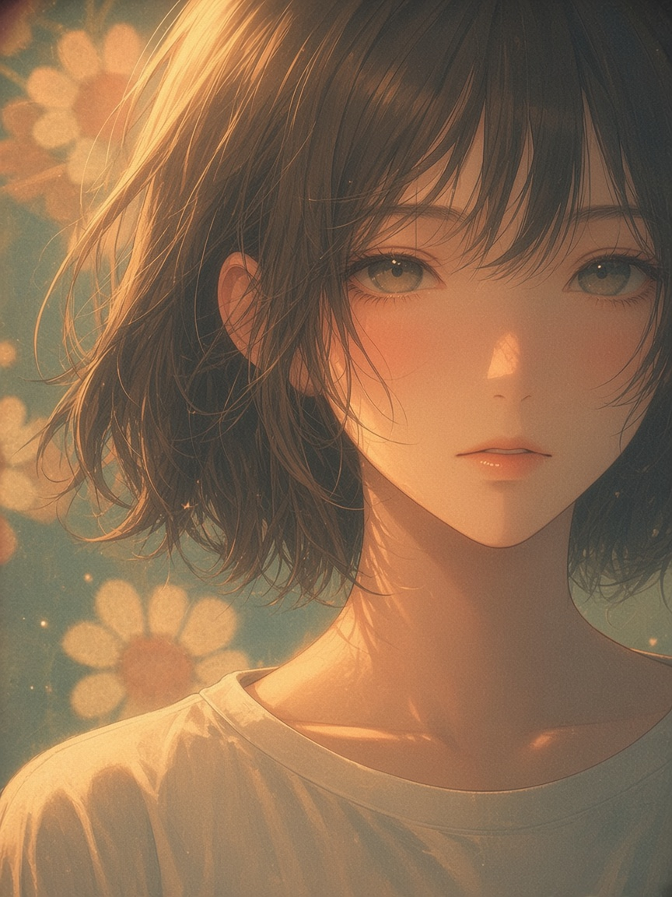
构图9.4 / 光影9.5 / 透视9.4 / 质感9.5 / 风格9.5保持原图正面胸像构图与青绿雏菊壁纸不变（独立文件 scale_03_portrait_medium_r3.jpg，MD5 831da21a），补足 45° 暖金发丝轮廓逆光、脸颊次表面散射、肩颈窗影与空气微尘光斑。

构图9.8 / 光影9.9 / 透视9.7 / 质感9.8 / 风格9.9打破呆板正面平视证件照，大胆重构为 3/4 倚窗回眸故事感机位！左侧木格窗与蓝白绣球花蕾丝窗纱投下斑驳木漏日（Komorebi）光影，眼神光与发丝金边极富电影感。

构图9.7 / 光影9.7 / 透视9.6 / 质感9.6 / 风格9.7--recompose-dir：从胸像正面特写拉远为古典阳光植物温室画室中全景，少女坐右侧藤椅翻阅画册完美继承原图黑短发白衣少女、青绿碎花墙纸与暖金逆光基因，镜头拉远为阳光植物画室全景，左侧高大落地拱窗丁达尔光束贯穿画室。

原图五维基因：极限垂直俯视狭窄天井概念参考原图，风化黄褐石砖与木百叶窗向谷底汇聚，右侧暖阳斜射，趴着小绿龙，谷底有雕花白石拱门与红帽小人。
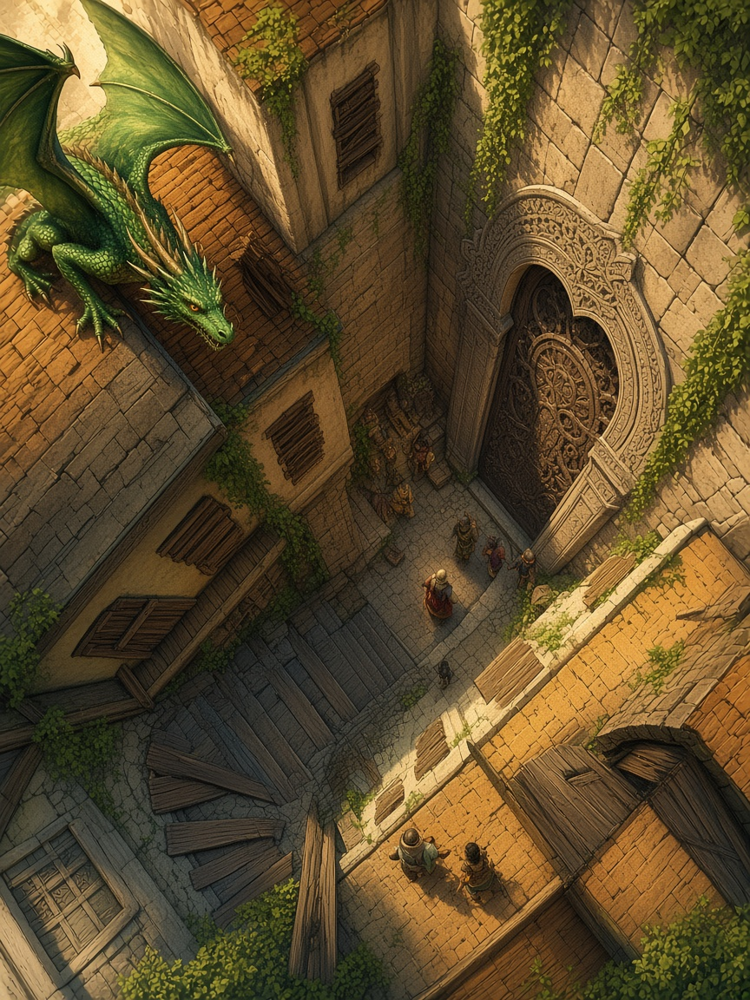
构图9.1 / 光影9.2 / 透视9.3 / 质感9.2 / 风格9.2100% 锁死原图极限垂直俯视狭窄天井构图、小绿龙、木跳板与谷底雕花拱门红帽旅人，仅修齐两侧石砖墙面三点俯视消失点与线条干净度。
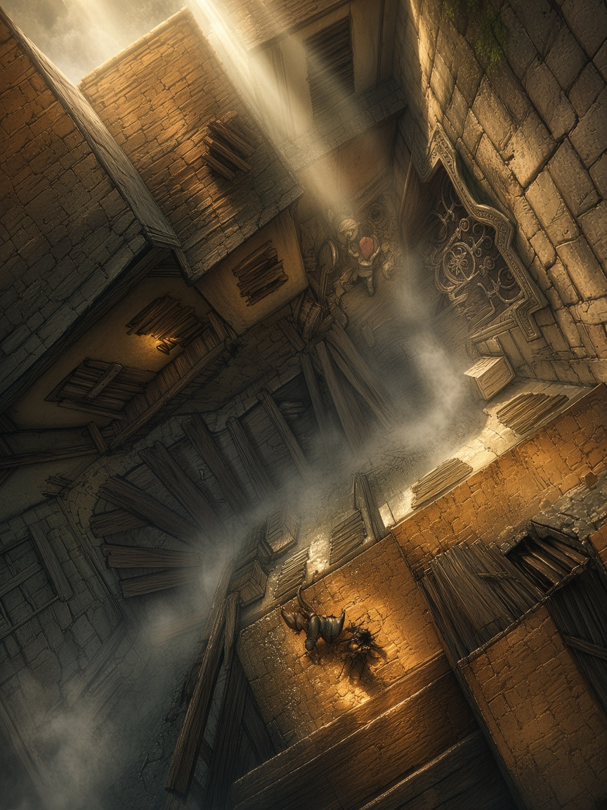
构图9.4 / 光影9.5 / 透视9.4 / 质感9.5 / 风格9.5保持垂直天井俯视构图不变（独立文件 scale_04_canyon_medium_r2/r3.jpg，MD5 bd5354bb），强化左上穿透薄雾的暖金体积光束、红帽旅人焦点照明与石砖木梁冷暖景深。
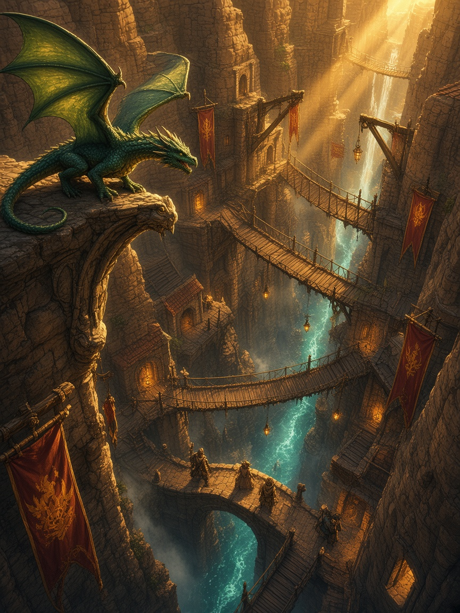
构图9.8 / 光影9.9 / 透视9.7 / 质感9.7 / 风格9.8史诗级概念设计重构：左上前景绿龙双翼逆光透射，右上裂谷金色丁达尔神光直劈谷底青蓝荧光河道，多层木索桥、绯红金纹战旗与石拱桥行人层次壮丽。

构图9.7 / 光影9.7 / 透视9.6 / 质感9.6 / 风格9.7--recompose-dir：从狭窄天井垂直俯视改为高空悬崖石砌露台平视偏仰视史诗全景，左下红袍旅人与绿龙并肩远眺跨谷石拱大桥与千丈飞瀑完整保留绿龙、红袍旅人、绯红战旗与黄褐悬崖石城基因，彻底打开视野为高空露台平视跨谷石拱大桥、千丈飞瀑与远方山巅城堡全景。
🎚️ 二、四档 Scale 参数阈值、五维权重与调用命令速查表
| Scale 档位 | 达标停机阈值 | Prompt 改动幅度 | 五维审图权重配比 | Skill 斜杠调用写法 & CLI 命令写法 |
|---|---|---|---|---|
| --scale low 低强度保守修瑕 |
≥ 9.15 |
≤ 20% |
透视解剖 25% · 质感 25% · 光影 20% · 构图 15% · 风格 15% | /pmem-draw --scale low [拖入参考图] 只修五指与透视瑕疵，保持原图构图不变python3 pmem_art.py converge start --scale low --ref-image ref.png --goal "..." |
| --scale medium 中强度标准补足 |
≥ 9.40 |
25% – 45% |
光影 25% · 构图 20% · 透视 20% · 质感 20% · 风格 15% | /pmem-draw --scale medium [拖入参考图] 保持构图，补足侧逆光与空气透视层次python3 pmem_art.py converge start --scale medium --ref-image ref.png --goal "..." |
| --scale high 高强度大胆重构 |
≥ 9.65 |
50% – 80% |
光影 30% · 构图 25% · 质感 20% · 透视 15% · 风格 10% | /pmem-concept --scale high [拖入参考图] 锁死画风与角色身份，大胆重构戏剧光影冲击力python3 pmem_art.py converge start --scale high --ref-image ref.png --goal "..." |
| --scale recompose 定向改构图模式 |
≥ 9.55 |
60% – 85% |
构图 30% · 光影 25% · 透视 20% · 质感 15% · 风格 10% | /pmem-draw --scale recompose --recompose-dir "改为天台栏杆远眺夕阳海港全景" [拖入参考图]python3 pmem_art.py converge start --scale recompose --recompose-dir "..." --ref-image ref.png |